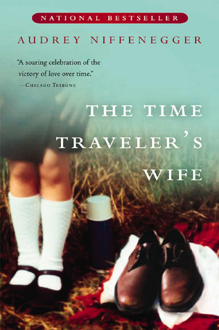

The Time Traveler's Wife
⭐️⭐️
Format: audio (17 hours 38 minutes)
- Previously: Threat Vector
- Next: Ready Player One
I loved this story.
Henry has an issue with his genes, and somehow time travels. All by himself. Uncontrollably. Basically, he travels back in time to get to know his wife of the future/present, but as she is growing up. This book talks about them, and their relationship. It's a great story, and really well told. I loved it. I love the manner of time travel which differs from others, in that a device isn't involved. Given the nature of his time traveling, I really like the unique style of character development, and also the gradual way in which the events are related.
The one thing I really didn't like, is the explicitly detailed sex. Good gravy. Basically, it was porn. I completely understand that a husband and wife are amorous with each other. I understand that it may add to the story to tell of their physical expressions of love. What is entirely unnecessary, however, is the amount of detail and the language used for it. Really, I don't think I've ever heard anybody talk about sex like the characters did. If the book were about sex, and the various ways and methods to have sex, I imagine it would fit right in. As it is, the detail of the sex had nothing to do with the story, and could have been related in a far cleaner and less-detailed way. For this reason alone, I have rated it so low. I can't give it the five stars it deserves for the rest of the story.
I listened to the book, which made it near impossible to skip ahead ("Maybe if I play it at double-speed, I can get through it faster... OH CRAP, NOW THEY'RE FASTER!"). I have to imagine that reading the book (as opposed to listening) would make it lots easier to skip the gory details.